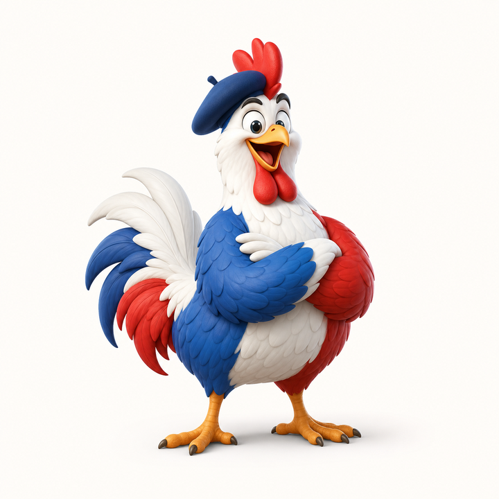

Le pull qui chante, le cherry-pick qui picore
Unicorn? Non. Poule.
`git pull` et `git cherry-pick`, mais avec un coq quand tout va bien et une poule KO quand Git dit non.
$ git poule --rebase
From github.com:alexandre/git-poule
Already up to date.
\\
\\ cot cot
\\
__
<(o )___
( ._> /
`---'Le pitch en 7 secondes
Un wrapper minuscule. Une ambition nationale.
Git fait le pull ou le cherry-pick. La poule fait le panache. Les arguments sont transmis, le code retour est préservé, et personne ne touche à ta config Git.
./install.sh
git poule --ff-only origin main
git picore abc123Nouveau dans le poulailler
Cherry-pick? Picore.
`git picore` appelle le vrai `git cherry-pick`, transmet tes options et garde le même code de sortie. La différence, c'est qu'un commit importé proprement mérite un petit cocorico.
$ git picore 4f8c2ab
[main 91d2c31] Corrige le bouton trop sérieux
Date: Fri Jul 3 14:12:00 2026 +0200
1 file changed, 3 insertions(+)
\\
\\ cot cot
\\
__
<(o )___
( ._> /
`---'Mode catastrophe contrôlée
Quand Git rate, la poule tombe.
Pas de chant de victoire sur échec. `git-poule` et `git-picore` jouent `poule.wav`, gardent le code non-zéro de Git et affichent un KO lisible pour ton terminal.
$ git poule --ff-only
fatal: Not possible to fast-forward, aborting.
pull rate
__
<(x )___
( ._> /
`---' KO